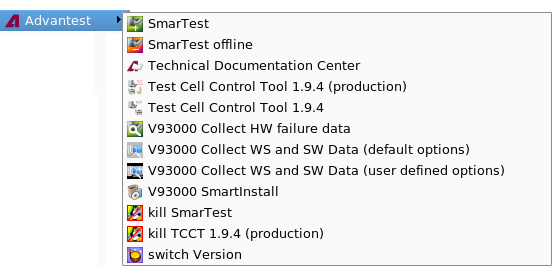
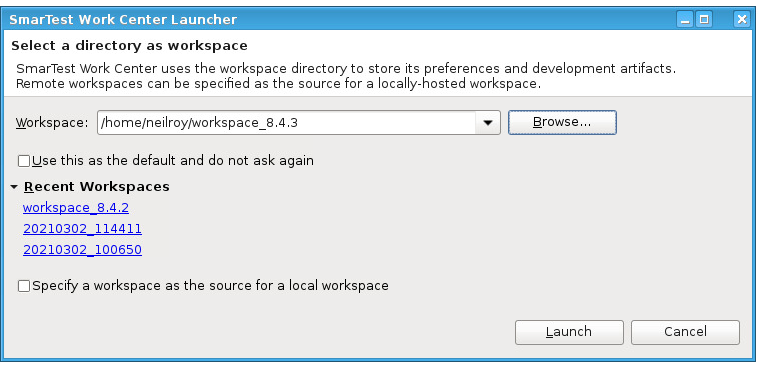

Starting SmarTest
About this task
You can start the software in several ways, depending on what status you want to have. For details on each of these modes, refer to Starting SmarTest with supervisor mode, Starting SmarTest with operator mode and Starting SmarTest with engineer mode.
The root user has access to all commands and files on the system controller adding the risk that changes are made to files that should not be changed.
Before you begin
The model file is used to store the test head hardware configuration. It specifies the installed test head cards, their features, and the mapping of these cards to pogo blocks on the DUT board interface. It also specifies the reference clock signal for the test system.
SmarTest needs this information in order to set the configuration and features of the test system resources for your addressed tests.
For details on the model file, its structure and how to work with it, see:
Starting SmarTest from the task bar
- From the task bar, click .
- Now click either of the symbols or , depending on whether you want to start SmarTest in offline or online mode,
respectively. See the following table for a description of your options.

SmarTest menu details SmarTest
Starts SmarTest software in online mode
SmarTest offline
SmarTest software in offline mode
Technical Documentation Center
Starts a browser and opens the SmarTest help pages
Test Cell Control Tool (production)
Starts the Test Cell Control Tool software in production mode
Test Cell Control Tool
Starts the Test Cell Control Tool software in offline mode
V93000 Collect HW failure data
Starts a browser and opens the SmarTest help pages
V93000 Collect WS and SW Data (default options)
Starts the Test Cell Control Tool software in production mode
V93000 Collect WS and SW Data (user defined options)
Starts the Test Cell Control Tool software in offline mode
kill SmarTest
Stops SmarTest production software if it is not responding
kill TCCT
Stops TCCT software if it is not responding
switch Version
Switches between different versions of the SmarTest software
- Normally, SmarTest starts in
Engineering mode. If you need another mode, click the button in the Operating control window shown below.

- Choose the wanted user mode, as detailed in Changing the User Mode.
Starting SmarTest from the terminal
- Open a terminal window.
- To change directory, type
cd /opt/hp93000/soc/prod_env/bin/
- To start SmarTest, type
./HPSmarTest [<options>] [<workorder_name>[<workorder_status_file>]]
There are the following options to start SmarTest:
SmarTest command line options Option
Description
No option
Starts the software in development mode online and shows the Setup perspective
-oStarts the software in development mode offline and shows the Setup perspective
-E(HPSmarTest -Eo for offline operation)
Starts the software in the production environment, with Engineer status. With this status, you can move back and forth freely between the development screens (where you develop a test program) and the production screens, and also to Supervisor and Operator status.
-S(HPSmarTest -So for offline operation)
Starts the software in the production environment, with Supervisor status. With this status, you only have access to the production screens. You can access the development screens by changing to Engineer status - provided you know the engineer password.
-O(HPSmarTest -Oo for offline operation)
Starts the software in the production environment, with Operator status. With this status, you can only select workorders, and execute them. You can access the development screens by changing to Engineer status - provided you know the engineer password.
-C(HPSmarTest -Co for offline operation)
Starts the software in the production environment, with Operator status and with the Operator Console. The workorder dialogs (the various texts for areas of the Workorder Select screens where you select something, or enter a particular value, Workorder Name, Lot_id, for example) also appear on the operator console.
-P
(HPSmarTest -Po for offline operation)
Starts the software in the production environment in protected mode, which protects setup files against modification. This mode gives no access to any debug or setup GUI's, and does also not allow switching into any other mode (see Protection for your setup files).
-v
Show the current SmarTest version
-j
Starts the software in the supervising mode, providing operation and supervising tools like the calibration data converter.
NOTE: Starts the software using the software license value package components only.
-n
Starts the software without any licenses.
For installation or service that needs no software license value package components (compare option -j)
-?
Shows a compact usage of the command
HPSmarTestThe table below summarizes what is available with each of the different startup lines.
SmarTest environments Command
Startup Environment
Access to Development
Create Work-orders
Execute Work-orders
HPSmarTest
Development
Y
Y
Y
HPSmarTest -E
Production
Y
Y
Y
HPSmarTest -S
Production
N1)
Y
Y
HPSmarTest -O
Production
N1)
N2)
Y
HPSmarTest -C
Production + Console
N1)
N2)
Y
The system looks for the .device_inuse_soc@<hostname> file. If it is not present in your home directory, or if the device directory is either missing or corrupt, the system displays the Select Device Folder window, where you can select an existing device or create a new device. See Device Directories.
The Workspace Launcher window appears.

- If you specify a workorder as a command line parameter, this workorder will automatically be started within the selected user mode (see Executing a Workorder From the Command Line in the SmarTest user documentation).
Functional changes
- Introduced before SmarTest 6.3.2
- SmarTest 7.1.4: Renamed .device_inuse_soc file